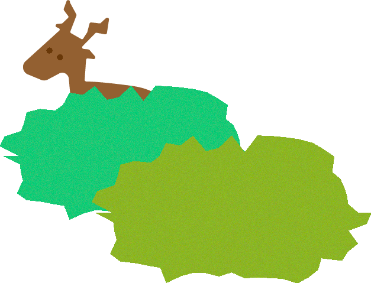
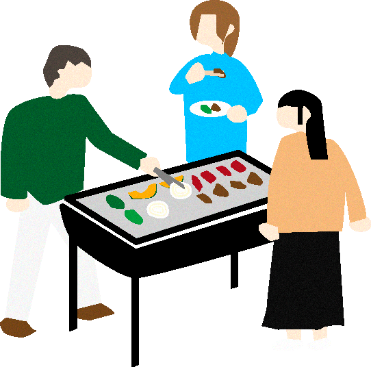
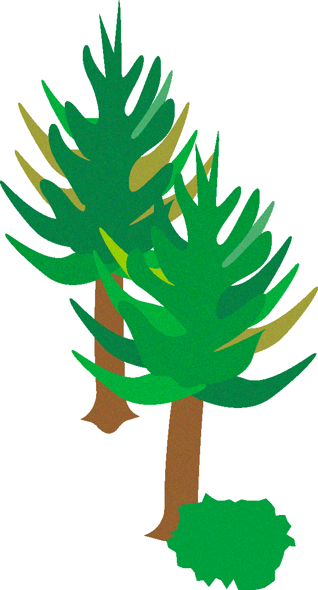
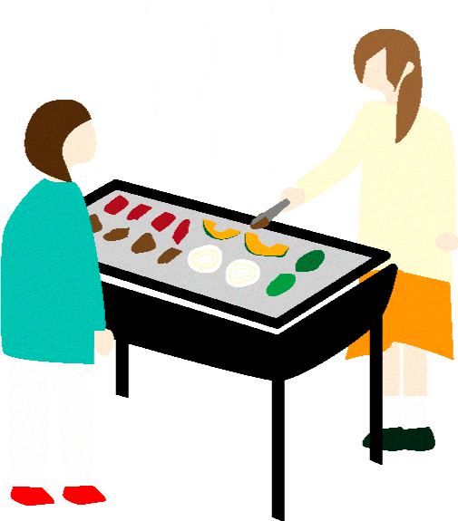
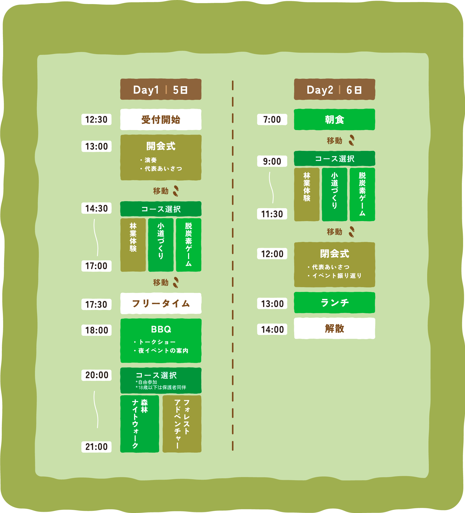
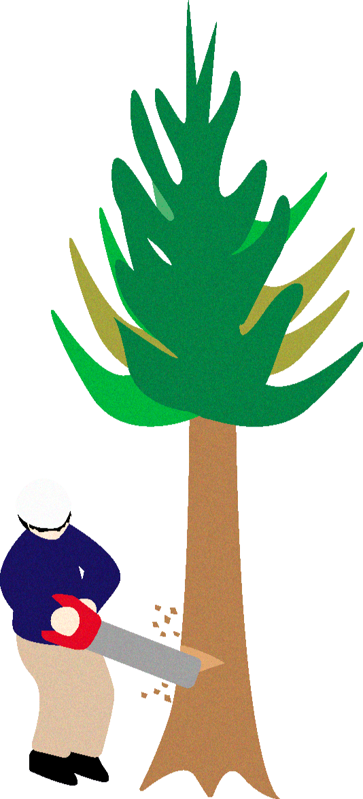
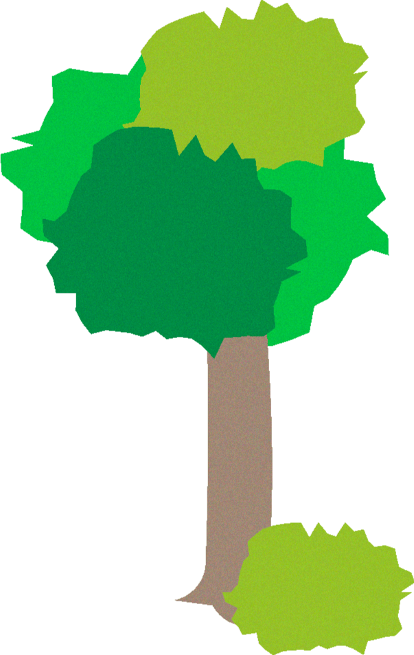
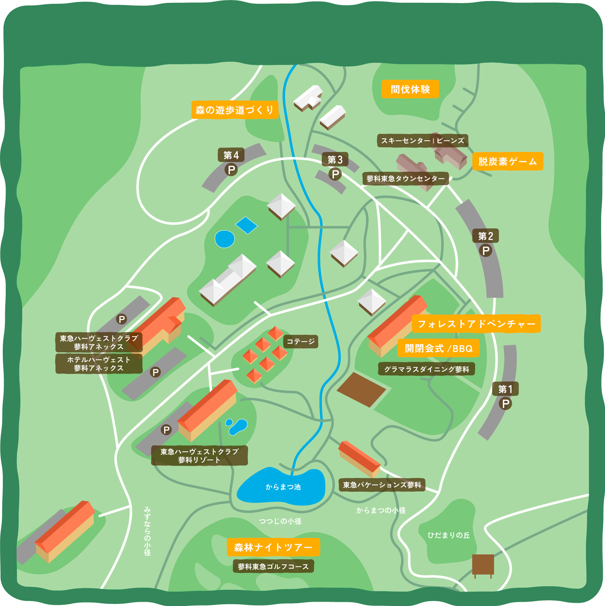
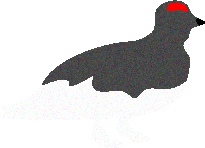

天竜川流域 森里川海プロジェクトは、環境省の森里川海プロジェクトに賛同し「森」「里」「川」「海」を体験し、学び、楽しむ、本物の機会を提供したいという想いから第1回もりぐらしfestivalを開催します。
イベントについて
スペシャルパートナー
東急不動産



目的
自然と共生した
「もりフェス」は体験型の学習機会であり、私たちが大切にすることは世界や日本の最前線の現場で活躍している人の声を聴き、実際に見て味わって、作業をし、本物に触れることが重要だと考えています。
今回の「もりフェス」は、第2回「里」、第3回「川」、第4回「海」とテーマを変えながら、学び、楽しむことを通してより豊かで、より自然と共生した未来をつくること、一人ひとりのライフスタイルシフトを目的としています。


内容
- 日程
- 場所
-
東急リゾートタウン蓼科
（長野県茅野市北山鹿山4026-2） - 対象
- 中学生以上
豊かな自然に囲まれる東急リゾートタウン蓼科にて開催する「森で遊び、森を学ぶ2日間」。普段から身近にありながら、知っているようでまだまだ知らない森のあれこれを、さまざまな体験をとおして全身で感じてみませんか？
間伐体験や木材加工の見学、森の中で遊歩道づくり、「脱炭素」遊んで学ぶカードゲーム、夜の森を散策する森林ナイトツアーなど。実際に森に入って、さまざまなコースを体験していただきます。
1泊3食つきの特別な2日間をお楽しみください！




この画像には以下のスケジュールが含まれています。
- 10月5日 1日目
- 12:30 PM - 受付開始
- 13:00 PM - 開会式（演奏、代表挨拶）
- 開会式終了後移動
- 2:30 PM から 5:00 PM - 選択コース体験（林業体験、小道づくり、脱炭素ゲーム）
- 移動
- 5:30 PM - フリータイム
- 6:00 PM - バーベキュー（トークショー、夜イベントの案内）
- 8:00 PM - 選択コースへの参加（自由参加、18歳未満は保護者同伴）
- 選択コース１：森林ナイトウォーク
- 選択コース２：フォレストアドベンチャー
- 9:00 PM - 1日目終了
- 10月6日 2日目
- 7:00 AM - 朝食
- 9:00 PM から 11:30 AM - 選択コースへの参加
- 選択コース１:林業体験 選択コース２：小道づくり 選択コース３：脱炭素ゲーム
- 12:00 PM - 開会式（代表挨拶、イベント振り返り）
- 1:00 PM - ランチ
- 2:00 PM - 解散

参加コース
イベント期間中は体験参加コースとして、昼の部３コース／夜の部２コースをご用意しております。昼の部の「Ａ．間伐体験」は全員参加となり、さらにＢ・Ｃどちらかお好きなコースを１つご選択いただきます。夜の部は任意参加となり、参加希望される方はＤ・Ｅのうちお好きなコースを１つご選択いただきます。お申し込み時に「どちらかのコース」もしくは「参加しない」を選択してください。

Ａ．間伐体験
諏訪森林組合の指導・厳格安全管理のもと10mほどの木を伐採する体験をします。さらに、間伐材を一定の長さに切り分ける”玉切り体験"やチップ加工見学も行います。

Ｂ．森の小道づくり
森の中に遊歩道をつくります。ならした地面にウッドチップを敷いたり、丸太を並べたり。小道づくりを通して、森を保全し活用することを学びます。

Ｃ．脱炭素ゲーム
カードゲームを通して、「脱炭素」について楽しく遊びます。脱炭素ゲーム公認ファシリテーターによるゲーム形式で、脱炭素社会への移行について理解を深めます。

Ｄ．森林ナイトウォーク
虫の声や木々のざわめきに耳をすませ、少しドキドキしながら夜の静かな森を散策します。普段とは違った森の姿が楽しめます。天気が良ければ綺麗な星空が見えるかも...！

Ｅ．フォレストアドベンチャー
樹の上に登って、樹から樹を渡る、森の中で自然を感じながら思いっきり楽しむアクティビティです。今回限定！夜のフォレストアドベンチャーをお楽しみいただけます。
コースの服装・持ち物について
服装：動きやすい服装 / 運動靴 ｜ 持ち物：タオル / 水筒 / 懐中電灯 / 雨具
服装：動きやすい服装 / 運動靴
持ち物：タオル / 水筒 /
懐中電灯 / 雨具



